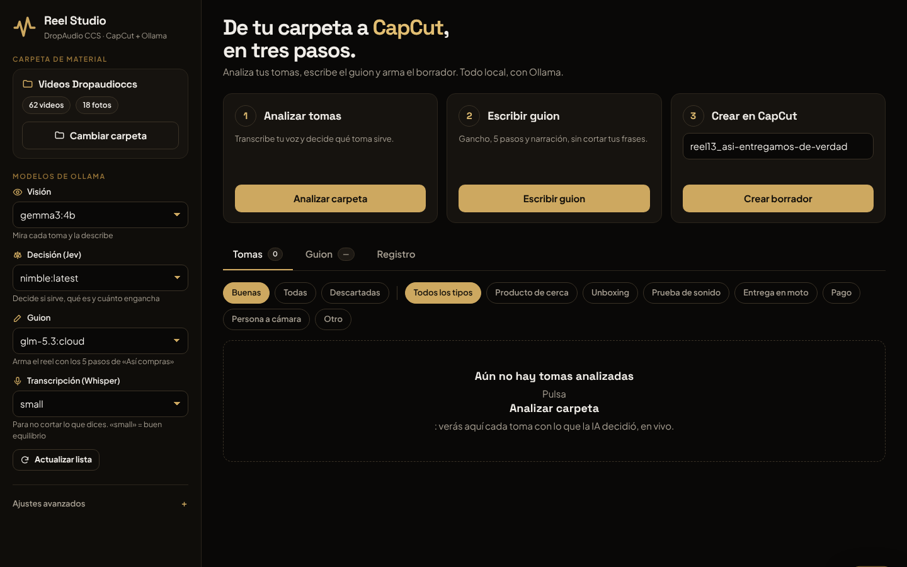
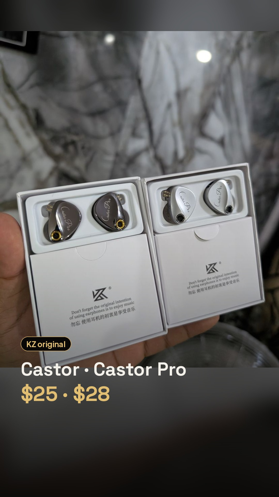

De los videos del teléfono a un reel en CapCut, con IA local
Cómo funciona
~80 archivos del Pixel, WhatsApp y fotos HEIC
Whisper transcribe, gemma3 mira y Jev decide qué sirve
Gancho y 5 pasos de «Así compras», sin cortar frases
Borrador 1080×1920 con clips, marca, música y voz
App de escritorio

El resultado

Hecho para DropAudio CCS · Caracas